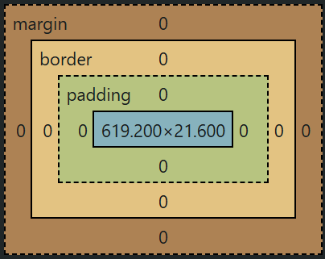

One of the most important concepts in CSS is the Box Model. Whenever the browser renders an element, it places that element inside an invisible box or we can say the browser treats every element as a box.
Content Layer
At the core of this box, there is a content area where our actual content is displayed. For example, in a paragraph, the text appears inside this content area.
Padding Layer
After the content area, the next layer is the padding, which is used to create space inside the element around the content.
Border Layer
In CSS, when you apply a border, it surrounds the padding area of the element.
Margin Layer
At the end, we have the margin layer, which is used to add space between elements.
BOX MODEL LEGEND👇

can find this box model in the browser’s DevTools, under the Styles tab.
Padding:
Padding is used to create space between the content and the border of a box.
p{
padding: 10px; /* TRBL */
}
TRBL means Top Right Bottom Left.
Writing Padding: 10px; means equal Padding for four sides of an element.
p{
padding: 10px 20px 10px 20px;
}
Each value represents a specific angle of a box ro element.
p{
padding: 10px 20px;
}
it means 10px for the top and bottom, 20px for the left and right. The missing values are always filled by the opposite side.
If we have two values the first value represents the vertical padding and the next value represents the horizontal padding.
p{
padding-block: 10px;
padding-inline: 20px;
}
padding-block represents the top and bottom paddings, padding-inline represents the left and right paddings.
Note: Margin takes the same values.
We can also use the Dev Tools to change the values of a Box Model.
Margin:
Margins are used to create space between Elements or space outside of the borders.
p{
margin: 20px; /* TRBL */
margin-top: 20px;
margin-right: 20px;
margin-bottom: 20px;
margin-left: 20px;
}
20px margins each sides.
Each side of a box also have seperate properties for padding and margins just like the above examples.
Difference Between Margin & Padding
p{
padding: 20px;
margin: 0;
}
Here if we have two paragraphs in a web page you will get 20px padding for the first paragraph & 20px padding for the second paragraph, the total space between these two paragraphs 40px.
if we invert the values of padding and margins like:
p{
padding: 0;
margin: 20px;
}
Now you won't see the 40px gap between the two paragraphs because when different elements have margins at the same point, the margins collapse, and only the larger margin is applied between the elements.
Always use the padding property to create space between the content and borders, and use margin property to seperate elements from each other otherwise you will get allot of issues if not using these in a right way.